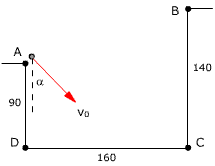
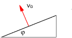

|
Desde el suelo se lanza un proyectil con velocidad
100 m/s formando 51º sobre la horizontal Hallar
a) Posición, velocidad y componentes
intrínsecas de la aceleración al cabo de 4 s
b) Cuando
estará moviéndose en dirección 45º sobre la
horizontal
c) Altura máxima que alcanza y
recorrido horizontal hasta conseguirla
d) En que momento la velocidad será
75 m/s
e) Tiempo que tarda en llegar al suelo,
alcance y velocidad de llegada |
Una bola rueda por una mesa de 1
m de altura y llega al borde con una velocidad de 2 m/s. Hallar:
a) Posición, velocidad y componentes
intrínsecas de la aceleración a cabo de 0.2 s
b) Cuando estará moviéndose
en dirección 50º bajo la horizontal
c) Donde estará cuando su velocidad
sea de 3 m/s
d) Tiempo que tarda en llegar al suelo, lugar donde cae y velocidad con
que lo hace |
Desde el tejado de un edificio de 10
m de alto se lanza una piedra a 5 m/s en dirección 30º bajo
la horizontal. Determina:
a) Posición, velocidad y componentes
intrínsecas de la aceleración a cabo de 1 s
b) En que momento su velocidad será
10 m/s
c) Cuando estará moviéndose en
dirección 20º bajo la horizontal
d) Tiempo que tarda en llegar al suelo, alcance
y velocidad de llegada |
 |
Plantea las ecuaciones del
tiro visto por un observador colocado en A, B, C
o D
Datos: v0 = 250 m/s, α
= 40º
|
|
|
Una pelota gira en
un plano vertical, unida a una cuerda de 5 m de largo, rozando el
suelo en el punto más bajo de su trayectoria.
La cuerda se rompe en la posición
indicada en la figura (α = 40º) cuando la velocidad de
la pelota es de 20 m/s. Calcula el alcance |
|
Un avión que vuela horizontalmente
a 200 m/s deja caer una bomba desde un altura de 1900 m. Calcula cuanto
tardará en llegar al suelo, alcance y velocidad de llegada |
Desde un ultraligero que vuela a 24
m de altura con una velocidad horizontal de 5 m/s se lanza hacia abajo
una piedra a 3 m/s. Determina el alcance y la velocidad de llegada |
|
Un cañón,
que está colocado al pie de una rampa de ángulo φ,
dispara un proyectil con velocidad v0 formando ángulo
α con la rampa. Determina a qué distancia del cañón
chocara con la rampa (Alcance) |
|
Desde un globo que asciende con velocidad
de 3 m/s se lanza horizontalmente una piedra a 4 m/s. Sabiendo que en
el momento del lanzamiento el globo estaba a 24 m de altura sobre el suelo.
Determina el alcance y la velocidad de llegada al suelo |
 |
Un cañón,
que está colocado en la ladera de un monte de inclinación
φ, dispara un proyectil con velocidad v0 en dirección
perpendicular a la ladera. Determina el alcance del proyectil |
|